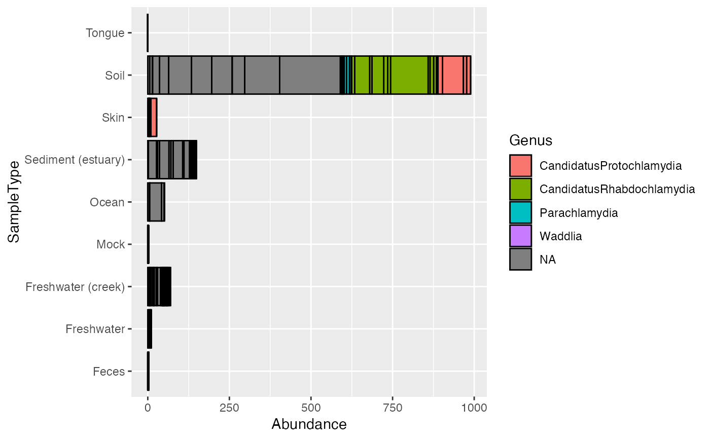

The ps_melt function is a specialized melt function for melting phyloseq objects
(instances of the phyloseq class), usually for producing graphics
with ggplot2.
The naming conventions used in downstream phyloseq graphics functions
have reserved the following variable names that should not be used
as the names of sample_variables
or taxonomic rank_names.
These reserved names are c("Sample", "Abundance", "OTU").
Also, you should not have identical names for
sample variables and taxonomic ranks.
That is, the intersection of the output of the following two functions
sample_variables, rank_names
should be an empty vector
(e.g. intersect(sample_variables(ps), rank_names(ps))).
All of these potential name collisions are checked-for
and renamed automatically with a warning.
However, if you (re)name your variables accordingly ahead of time,
it will reduce confusion and eliminate the warnings.
NOTE: Code and documentation copied (and very slightly modified) from an old version of speedyseq by Michael McLaren.
speedyseq reimplements psmelt from phyloseq to use functions from the tidyr
and dplyr packages. The name in microViz is changed to ps_melt for consistency with other functions.
ps_melt(ps)(Required). An otu_table-class or
phyloseq-class. Function most useful for phyloseq-class.
A tibble class data frame.
Note that “melted” phyloseq data is stored much less efficiently, and so
RAM storage issues could arise with a smaller dataset (smaller number of
samples/OTUs/variables) than one might otherwise expect. For common sizes
of graphics-ready datasets, however, this should not be a problem. Because
the number of OTU entries has a large effect on the RAM requirement, methods
to reduce the number of separate OTU entries – for instance by
agglomerating OTUs based on phylogenetic distance using
tip_glom – can help alleviate RAM usage problems. This
function is made user-accessible for flexibility, but is also used
extensively by plot functions in phyloseq.
library(ggplot2)
library(phyloseq)
data("GlobalPatterns")
gp_ch <- subset_taxa(GlobalPatterns, Phylum == "Chlamydiae")
mdf <- ps_melt(gp_ch)
mdf2 <- psmelt(gp_ch) # slower
# same dataframe, except with somewhat different row orders
dplyr::all_equal(tibble::as_tibble(mdf), mdf2, convert = TRUE) # TRUE
#> Warning: `all_equal()` was deprecated in dplyr 1.1.0.
#> ℹ Please use `all.equal()` instead.
#> ℹ And manually order the rows/cols as needed
#> [1] TRUE
nrow(mdf2)
#> [1] 546
ncol(mdf)
#> [1] 17
colnames(mdf)
#> [1] "OTU" "Sample"
#> [3] "Abundance" "X.SampleID"
#> [5] "Primer" "Final_Barcode"
#> [7] "Barcode_truncated_plus_T" "Barcode_full_length"
#> [9] "SampleType" "Description"
#> [11] "Kingdom" "Phylum"
#> [13] "Class" "Order"
#> [15] "Family" "Genus"
#> [17] "Species"
head(rownames(mdf))
#> [1] "1" "2" "3" "4" "5" "6"
p <- ggplot(mdf, aes(x = SampleType, y = Abundance, fill = Genus))
p <- p + geom_bar(color = "black", stat = "identity", position = "stack")
# This example plot doesn't make any sense
print(p + coord_flip())

# TODO replace this...